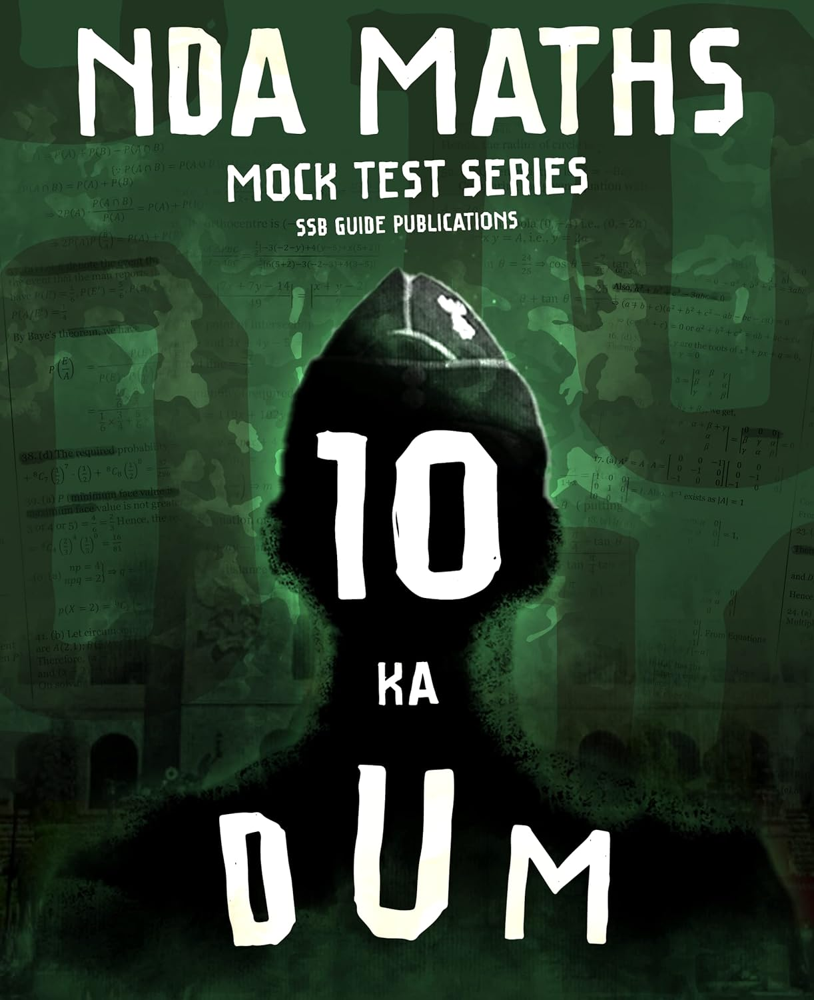
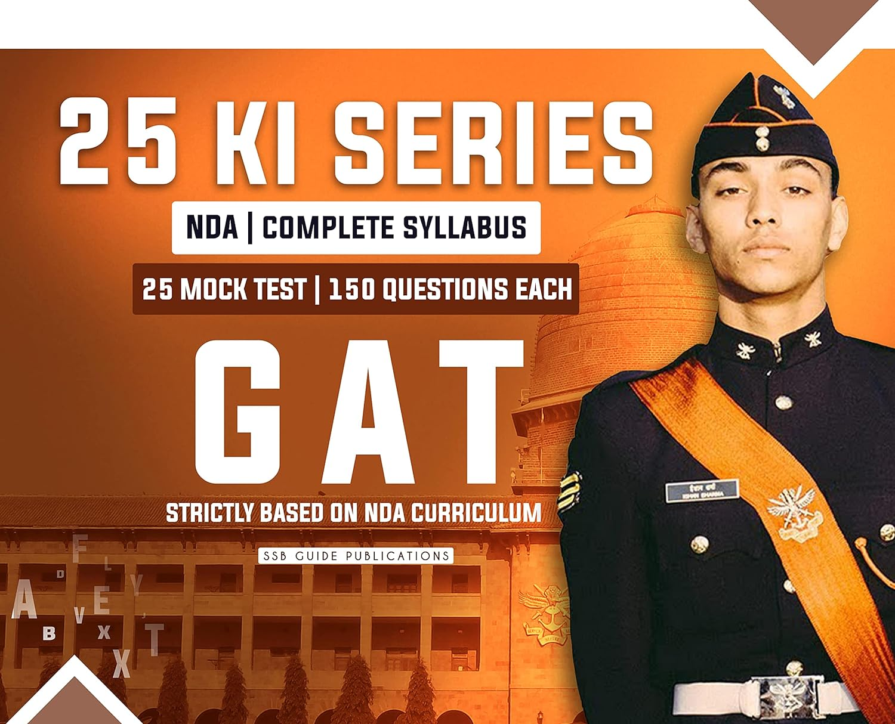

10 KA DUM MOCK TESTS SERIES BY ARPIT CHAUDHARY
NDA Exam Preparation Made Easy with 10 Ka Dum Test Series Printed paper 100% Fresh & Unseen Hot MCQs hand picked from Top Defence Classroom Subject Experts. Strictly, As per Latest Trend, Pattern & Syllabus of NDA Exam 2024 ( Common Defence Selection Test Conducted by UPSC, For Selection in Indian Army, Indian Navy & Indian Airforce).

Product details
Download : PDFASIN : B0BN26JDJ2 Publisher : SSB GUIDE (1 January 2022) Language : English Perfect Paperback : 159 pages Reading age : 15 years and up Country of Origin : India Best Sellers Rank: #238 in Books (See Top 100 in Books) #1 in NDA & NA Exams
GAT 25 Ki Series By Arpit Chaudhary
NDA Exam Preparation Made Easy with 25 Ki Test Series Printed paper 100% Fresh & Unseen Hot MCQs hand picked from Top Defence Classroom Subject Experts. Strictly, As per Latest Trend, Pattern & Syllabus of NDA Exam 2021 ( Common Defence Selection Test Conducted by UPSC, For Selection in Indian Army, Indian Navy & Indian Airforce).

Product details
Download : PDFASIN : B09G4BNP49 Publisher : SSB GUIDE; First Edition (1 January 2021); SSB GUIDE Language : English Item Weight : 490 g Dimensions : 20.3 x 25.4 x 4.7 cm Country of Origin : India Importer : SSB GUIDE Packer : SSB GUIDE Best Sellers Rank: #101,524 in Books (See Top 100 in Books) #106 in Army Exams
Complete NDA Physics Notes

Download : PDF
NDA Economics Hand Written Notes

Download : PDF
Arihant Pathfinder NDA Book PDF New Edition
Download Arihant Pathfinder NDA Book PDF Free. In this post, you will be able to access a book that help you in many ways in your preparation journey for NDA 2023. Arihant always gives Quality content through their books.
All over India Arihant published books in many languages for several exams. In this article, we will talk about how will you get this special Book for the NDA exam which is Arihant Pathfinder NDA Book. Every year this book comes with the latest edition as per the latest exam pattern and curriculum of NDA.
This is not an easy exam, it needs a proper strategic plan to crack this exam. Every year UPSC conducts this exam all over India, and many students appear in the exam. If you want to crack this exam you have to choose the best Notes, Best Books, and many more. So, this Arihant Pathfinder NDA Book is also one of the best book, it contains almost everything which you need to crack the exam.

Product Details
Download : PDFBook Name: Arihant pathfinder NDA Book Published by: Arihant Publications Language: English Useful for Exams: NDA, NA & Other Defense-related Exams
Disha Publication NDA Maths Book PDF
If you are looking for Disha publication NDA book pdf then this post is for you. As, you all know, cracking any competitive exam such as NDA requires quality study material which includes the best book
To help candidates for the NDA book pdf this post provides the Disha publication book PDF for Math (paper-1) and General ability test (Paper-2) which anyone can download from the Google Drive link easily. You will get Disha topic-wise, chapter-wise previous year question paper book pdf of English, GAT, and Math.
Firstly, there are many advantages/benefits of Disha’s publication NDA book pdf. The books are comprehensive and contain a lot of topic-wise questions of every chapter for mathematics which is paper-1 of the NDA exam as well as English and general knowledge in a separate book pdf. Disha topic-wise solved papers book pdf of NDA/NA helps to analyze the previous year’s trend of NDA exam, through which you can form a better understanding of the topics which are most important every year.

Product Details
Download : PDFBook name: Disha NDA 16 years math book pdf Size: 8.29 MB No. of page: 648 Pages
Disha Publication NDA English Book PDF
Firstly, there are many advantages/benefits of Disha’s publication NDA book pdf. The books are comprehensive and contain a lot of topic-wise questions of every chapter for mathematics which is paper-1 of the NDA exam as well as English and general knowledge in a separate book pdf. Disha topic-wise solved papers book pdf of NDA/NA helps to analyze the previous year’s trend of NDA exam, through which you can form a better understanding of the topics which are most important every year.

Product Details
Download : PDFBook name: Disha NDA 16 years English and General knowledge solved papers. Size: 5.45 MB No. of pages: 432 Pages
Arihant Pathfinder NDA Book PDF Old Edition
Download Arihant Pathfinder NDA Book PDF Free. In this post, you will be able to access a book that help you in many ways in your preparation journey for NDA 2023. Arihant always gives Quality content through their books.
All over India Arihant published books in many languages for several exams. In this article, we will talk about how will you get this special Book for the NDA exam which is Arihant Pathfinder NDA Book. Every year this book comes with the latest edition as per the latest exam pattern and curriculum of NDA.
This is not an easy exam, it needs a proper strategic plan to crack this exam. Every year UPSC conducts this exam all over India, and many students appear in the exam. If you want to crack this exam you have to choose the best Notes, Best Books, and many more. So, this Arihant Pathfinder NDA Book is also one of the best book, it contains almost everything which you need to crack the exam.

Product Details
Download : PDFBook Name: Arihant pathfinder NDA Book Published by: Arihant Publications Language: English Useful for Exams: NDA, NA & Other Defense-related Exams